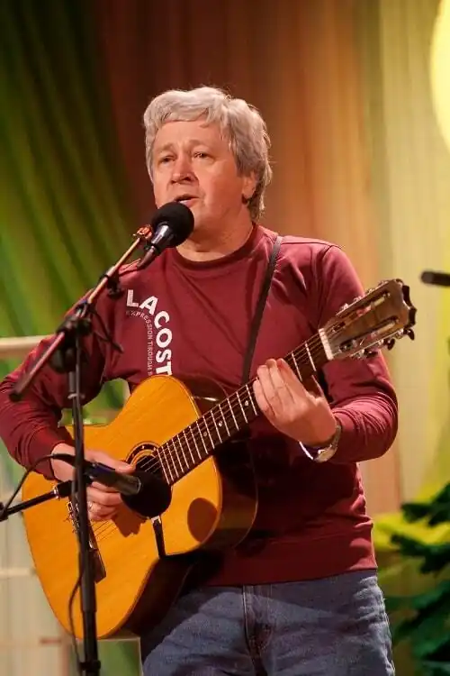

Ігор Теодорович Жук — український бард, поет-пісняр, театральний та кінодраматург, фізик — народився 7 грудня 1951 в с. Руда-Сілецька Кам'янко-Бузького району Львівської області.
У 1972 році закінчив фізичний факультет Львівського державного університету імені І. Франка за спеціальністю теоретична фізика, далі навчався в аспірантурі Інституту теоретичної фізики АН України. Ігор Теодорович — кандидат фізико-математичних наук (1990 рік), спеціаліст із комп'ютерної графіки, кіносценарист, старший науковий співробітник Інституту космічних досліджень НАНУ та НКАУ.
Ігор Жук — автор радіо-вистав, дитячої п'єси, сценаріїв понад 30 фільмів студії "Київнаукфільм", трьох художньо-пізнавальних книг для дітей. До виходу на бардівську сцену Ігор Жук став відомий у колах київської інтелігенції як художник, організатор ряду виставок мистецького андеґраунду на базі Інституту теоретичної фізики. Мав декілька власних експозицій. Навчався у майстерні київських художників (Г. А. Зубченко, Г. Д. Пришедько). З 1972 року пише пісні на власні вірші. Має близько 400 пісень (українською, російською, польською мовами). Ігор Жук – лауреат та володар спеціального призу за кращу поезію Першого всесоюзного фестивалю авторської пісні (за поданням Булата Окуджави, 1986 рік, Саратов), лауреат Всеукраїнського фестивалю авторської пісні "Оберіг" (1991-1994 роки, Луцьк) та Всеукраїнського поетичного вернісажу "Троянди й виноград" (Фонд імені Максима Рильського, 2006 рік), володар премії імені В. Стуса (1997 рік). Найбільшими авторитетами в поезії і своїми "заочними" учителями вважає поетів "Срібного віку" – Ахматову, Цвєтаєву, Мандельштама, Гумільова, Пастернака, Волошина; з сучасників – Булата Окуджаву та Ліну Костенко. Виступав у багатьох містах України, а також в Бельгії, Польщі, Росії, США. Учасник Фестивалю української культури в Сопоті (1991 рік, Польща). Постійний учасник та член журі багатьох фестивалів авторської пісні. Автор пісень до історичних фільмів "Отаманщина" (1993 рік), "Симон Петлюра" (1993 рік), "Знак Божої іскри" (2001 рік), до анімаційного фільму "Йшов трамвай №9" (2002 рік, "Срібний ведмідь" на Берлінському міжнародному кінофестивалі в 2003 році). З виданого має поетичну збірку під назвою "Вавилон", яку вийшла чотирма мовами – українською, російською, польською і німецькою. В основі збірки – біблійний цикл пісень. З 1972 року постійно мешкає в Києві. Працював науковим співробітником спочатку в Інституті теоретичної фізики національної Академії наук, потім в Українському центрі стандартизації та метрології.